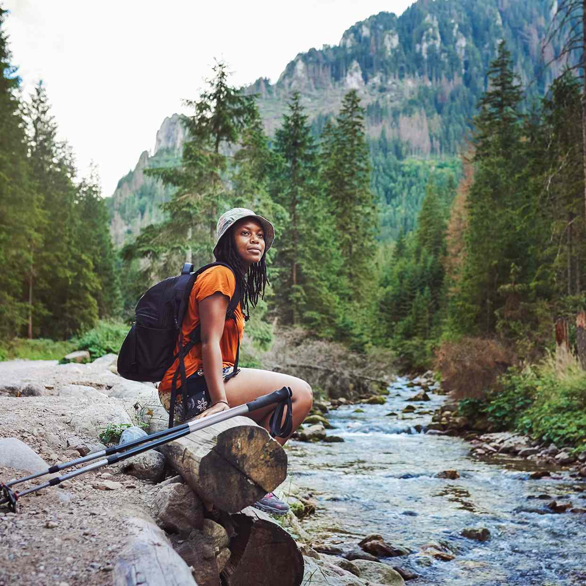
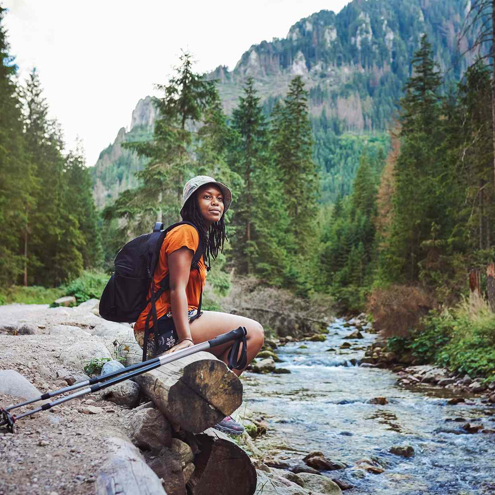
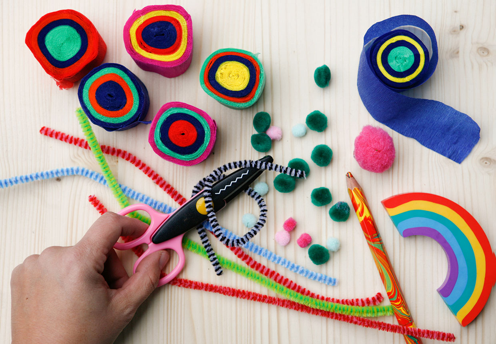
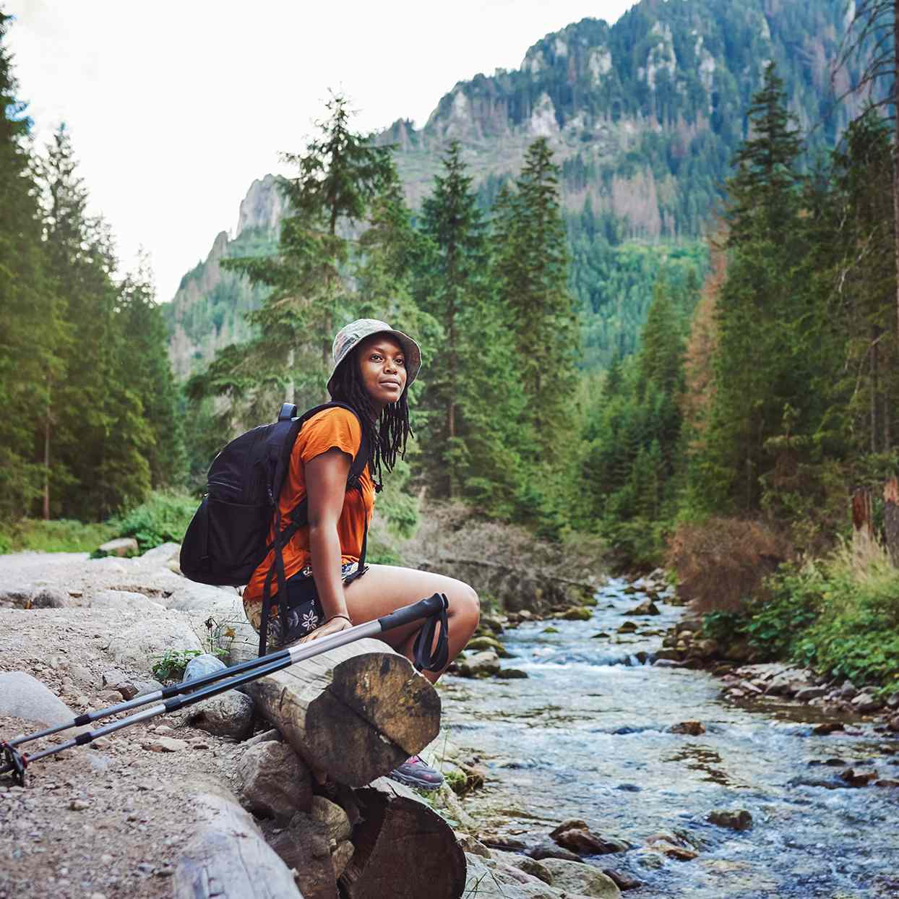

Doing mindful guided meditations can greatly improve your mental health. Try Buddhist mediatations, breathwork, muscle relaxation and mantra mediation. All of these methods are great ways to detress and focus on self-care. It can be as simple as typing in a quick 5 minute video and taking a break or being mindful of your surroundings, mental health is about taking time for you.

Here are some fun Arts & Crafts ideas!
Can't decide what to read or watch? Here's some randomized options from our personal favorites and from the highly rated!
Apart from the numerous health benefits that stem from going outside and reconnecting with nature, it's a great way to have fun and pass the time either alone or with a group of friends! Whether your joining a group of friends for a hike up a mountain or just need to go outside for some fresh air, the outdoors are a beautiful and great place to spend your time
The majority of sports can be played outdoors and its a great way to stregthen both your body and your mind. Sports are a great way to stay healthy and hang out with your friends!
Going for a walk is a nice way to get some fresh air or take your dog out to go to the bathroom, and why not get some great views while your at it with a hike? There are many trails central to...everywhere really. Enjoy beautiful landscapes and stunning views on a hike with your friends, or by yourself if you don't prefer a crowd. Hiking/walking is a great and healthy way to connect with nature. Give it a try!
Did you know that 70% of the Earth is ocean? But, different parts of the ocean have different aspects. Travel to Hawaii for amazing warm water surf or go snorkeling in Australia to see colorful oceanlife and coral reefs! Try kayaking or sailing, or paddleboarding on calm waters. The ocean has tons of activies to try all over the world!
